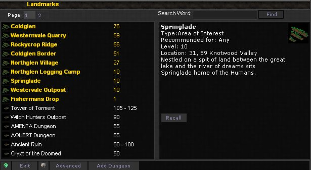

| |
The Landmarks screen can be used quickly access important locations in the current realm, it may also be used to find player created dungeons for you to level your characters in.

You can enter a phrase to search for to find matches for your query, if you would like to find specific monster spawns inside dungeons you should use the Advanced search button at the bottom of the screen.
Dungeon Masters can click the "Add Dungeon" button at the bottom of the screen to add an unlisted dungeon to the landmark screen.
| | |
|